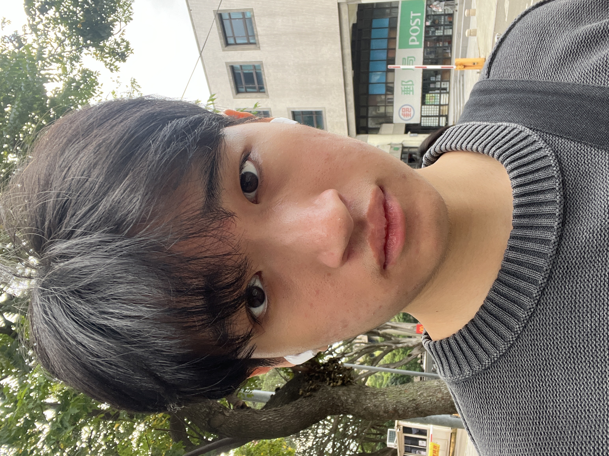
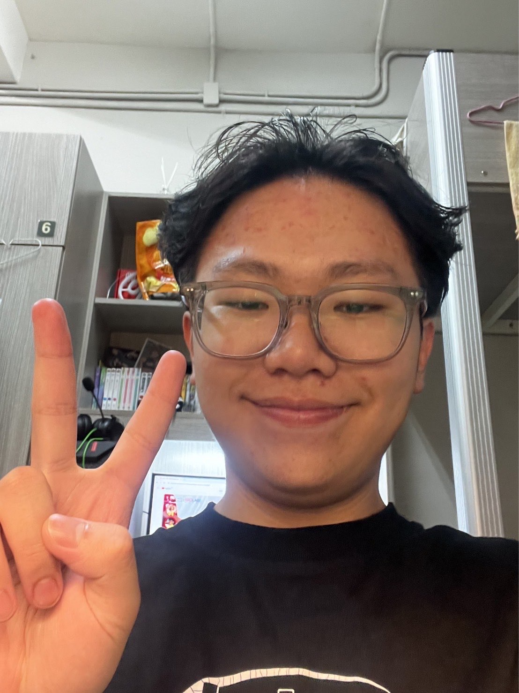

我們的團隊

詹力維
大家好，我是詹力維，目前是資訊管理系二年級的學生。我對於科技、電子產品以及網頁開發有著濃厚的興趣，這也是我選擇資訊管理作為專業的原因。平時，我喜歡觀看電影和玩電腦遊戲，這讓我能放鬆心情，也激發了我對數位領域的創意思維。未來，我希望能在資訊科技領域有所發展，將我的技能應用到實際工作中，並持續學習和成長。希望透過這次專題的實作，能提升自己的能力，並與大家分享我的學習成果。 這樣的介紹簡短且具體，若需要調整或補充內容，隨時告訴我！

蔡承翰
我是個熱愛學習和探索的人，喜歡挑戰新事物，擅長解決問題，也期待未來能創造更多可能性。喜歡各式各樣的運動，像是打籃球、排球，也喜歡交朋友還有參加各式各樣的活動。我重視持續成長，希望未來能在專業領域創造價值，實現自己的目標。同時，我也喜歡透過興趣來平衡生活，例如音樂、運動或美食，讓自己始終保持熱忱，面對每一天的挑戰與機會。

張于翊
我除了專業技能之外，我也非常重視個人特質的培養。我認為誠實、負責任和團隊合作是成功的基石，因此我總是以開放的心態與他人合作，並努力促進團隊的共同目標。在過去的[工作/學習]經驗中，我曾經參與過[描述你的一項成功經驗或專案，例如：「一個成功的網站開發專案，完成後獲得用戶的高度好評」]，這些經歷讓我學會了如何有效解決問題，並靈活應對挑戰。 在未來，我希望能夠進一步發揮我的潛力，不僅在專業上持續進步，還希望能對所屬的團體或社會帶來正向影響。如果有機會，我期待能與各位共同學習成長，並攜手創造更多的可能性。